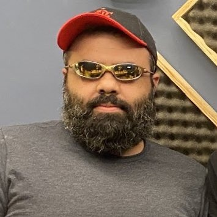
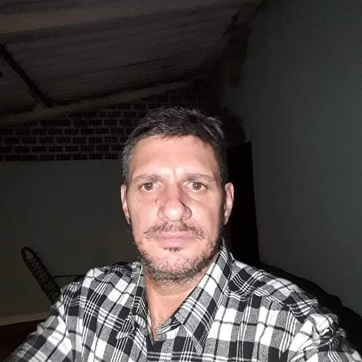

Carlos Pelegrin
Senior Android Engineer | Tech Lead | SmartPOS & IoT | Mobile Specialist (Java/Kotlin • Flutter/Dart)
Umuarama, Paraná, Brasil · Dados de contato
Mais de 500 conexõesFulano, Beltrano e mais 49 conexões em comum
Saas Jurídico / LegalTech (Confidencial)
MBA USP/Esalq
Destaques
Carlos está comemorando 4 anos na empresa Senac PR
Vocês trabalharam na empresa Unipar - Universidade Paranaense
Vocês trabalharam na empresa Unipar - Universidade Paranaense de março de 2018 até janeiro de 2019
Sobre
Senior Software Engineer com mais de 13 anos de experiência, especializado no ecossistema Android
Nativo (Java) e na integração de baixo nível com hardwares complexos. Tenho forte atuação no setor
de meios de pagamento (SmartPOS), automação industrial e IoT, construindo pontes robustas e seguras
entre o software e o mundo físico.
Minha trajetória técnica é focada na arquitetura e sustentação de soluções críticas e sistemas
legados. Possuo experiência consolidada no consumo de interfaces AIDL, engenharia reversa de
SDKs
proprietários para análise de comportamentos não documentados e criação de arquiteturas de
testes
para validação de periféricos acoplados (impressoras térmicas, leitores ópticos e sensores).
Além da atuação corporativa técnica, possuo forte veia de Liderança e Produto:
- Tech Lead & Mentor: 8 anos de experiência como Professor Universitário de Engenharia e TI,
traduzindo necessidades de negócio em arquiteturas técnicas eficientes e liderando equipes de
alto
desempenho.
- Visão Holística (Product Engineer): Como empreendedor e desenvolvedor Fullstack, fundei e
gerencio
um SaaS (Laravel/Vue) há mais de 3 anos, atuando desde a concepção da infraestrutura escalável
até a
experiência do usuário final.
Sou movido por resolver problemas complexos de infraestrutura e integração, garantindo
estabilidade
operacional para milhares de dispositivos em campo, sempre com foco em escalabilidade e
excelência
técnica.
Stack Principal: Android Nativo (Java) • SmartPOS • Integração de Hardware (BLE, AIDL) •
Engenharia
Reversa • Tech Leadership & Mentoring • PHP/Laravel
Experiência
Mais perfis pra você
-

Fulano de Tal
Cargo atual
-
Fulano de Tal
Cargo atual
-
Fulano de Tal
Cargo atual